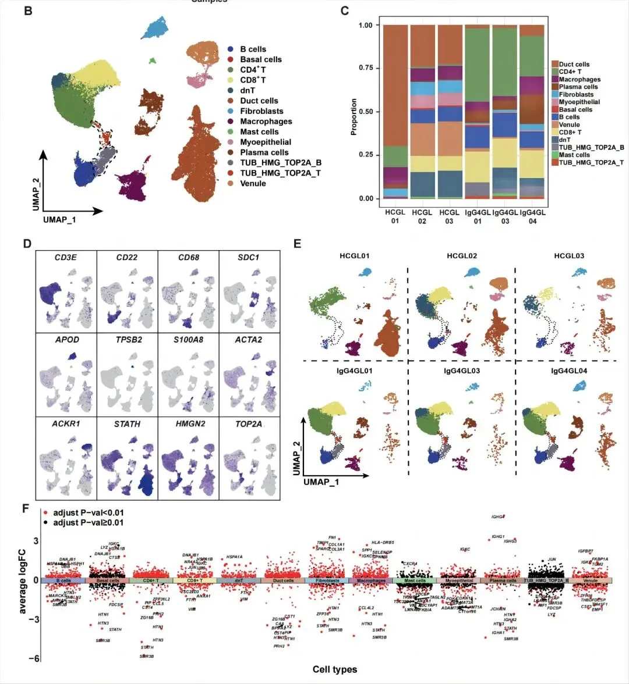
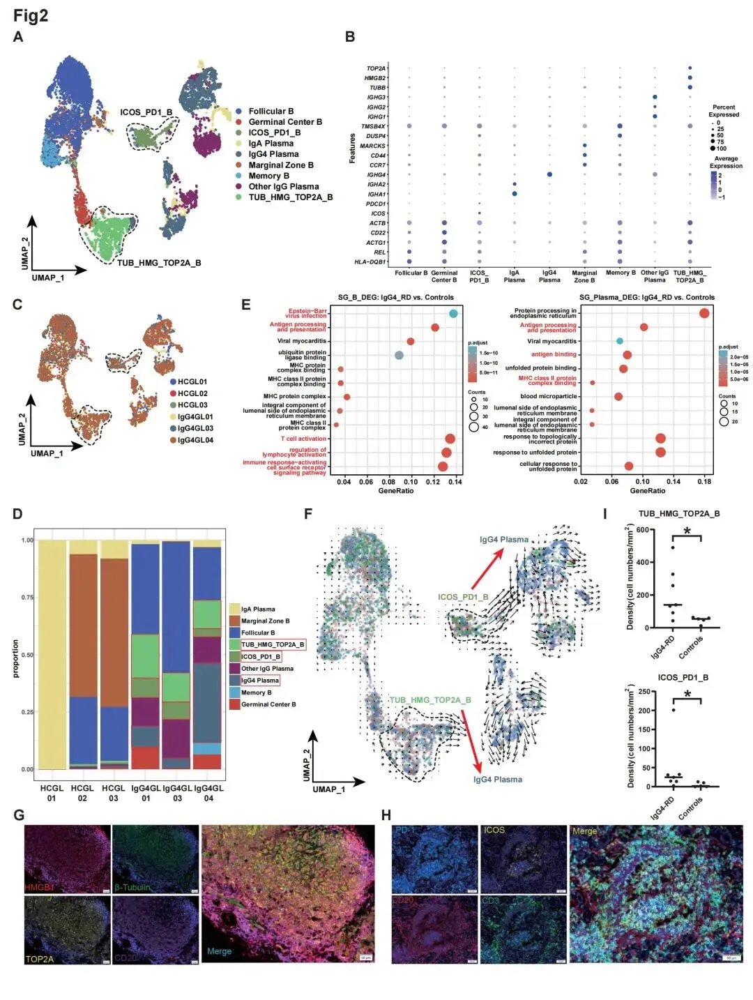
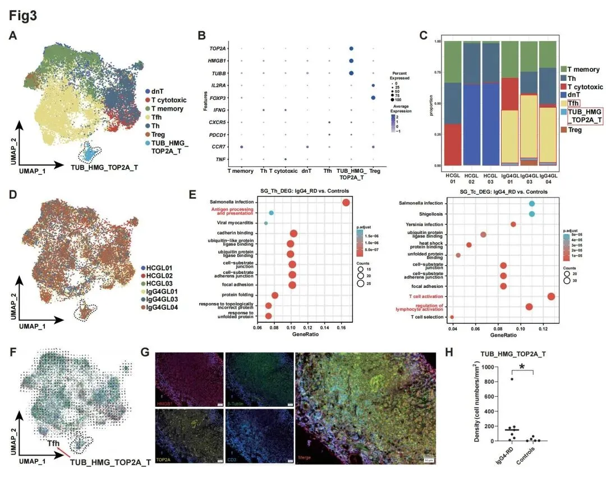
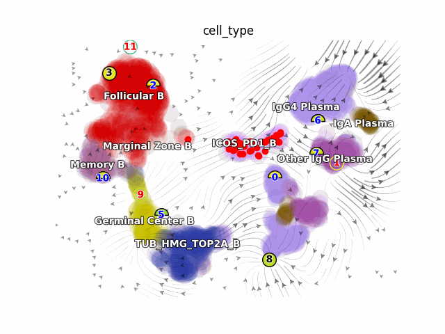
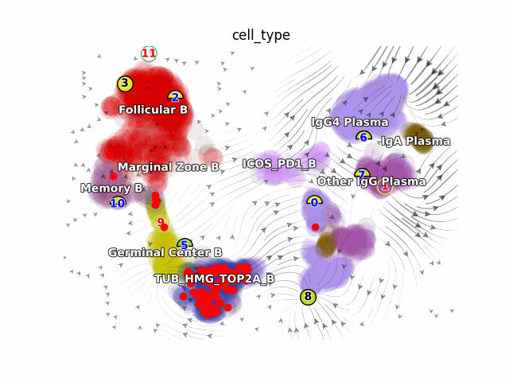
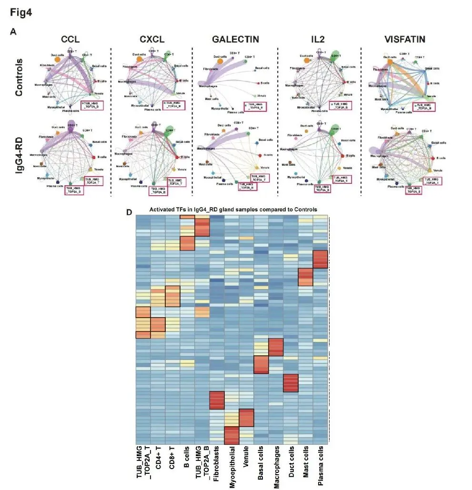
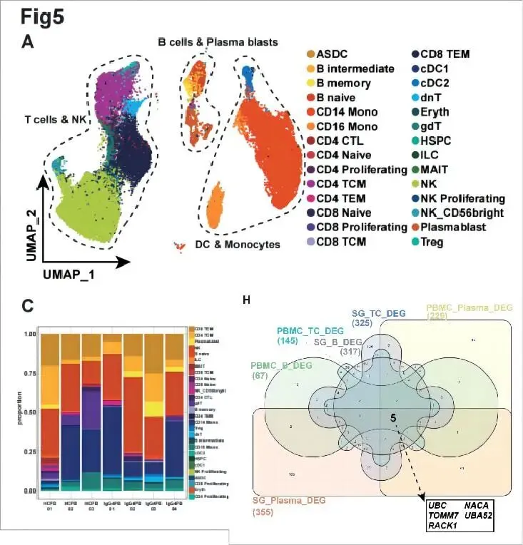
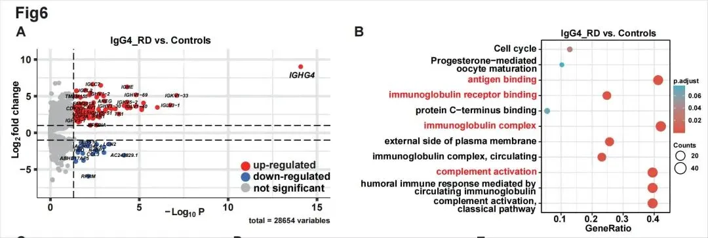

IgG4相关性疾病中颌下腺和血液中的细胞和分子改变
原文：https://mp.weixin.qq.com/s?__biz=MzAwMzIzOTk5OQ==&mid=2247503081&idx=1&sn=29890957ab75f050d466ca659292b529&chksm=9b3cb5b9ac4b3cafe279783c49cf7928819c5caeffbc34e52ae0c79f5e701ce8a25dd6f0c913#rd 合集：单细胞教程全收录 / 文献速递

导语 .
2023年6月21日，天津医科大学总医院风湿免疫科魏蔚主任和天津医科大学基础医学院蔡志刚教授为共同通讯，天津医科大学总医院李艳梅医师和天津医科大学王枳钦博士为共同第一作者在国际著名期刊《Annals of the Rheumatic Diseases》（IF=27.4）上发表了“Single-cell transcriptome analysis profiles cellular and molecular alterations in submandibular gland and blood in IgG4-related disease”的研究成果，该研究利用单细胞转录组测序首次全面描述了IgG4相关性疾病中颌下腺（SMGs）的单细胞转录图谱，并结合Bulk RNA测序和多重免疫荧光染色来揭示IgG4相关性疾病患者SMGs和外周血中免疫细胞的细胞组成、基因表达特征和发育轨迹，帮助更好地了解该疾病的分子机制。北京寻因生物在该研究中主要承担了单细胞测序和部分分析工作。 接下来一起了解这篇高分文章。
文章亮点
1. 首次全面描述了IgG4相关性疾病中颌下腺（SMGs）的单细胞转录图谱
2. 发现SMGs中新的免疫细胞亚群，可能参与IgG4的产生过程
3. Bulk测序和单细胞测序相互佐证，多组学联用提供了认识疾病的新手段
研究背景
IgG4相关性疾病（IgG4-RD）是一种纤维炎症性疾病，其特征是IgG4+浆细胞在多个器官中浸润。已有研究揭示了IgG4-RD患者外周血单核细胞(PBMCs)中免疫细胞的异质性。然而，对IgG4-RD中受影响组织中所有细胞的特征，以及免疫细胞和间质细胞之间相互作用的全面研究在很大程度上仍然未知。
主要研究成果
1. 在IgG4-RD患者颌下腺（SMG）组织中发现显著变化的免疫细胞亚群
取3名IgG4-RD患者和3名对照的颌下腺组织，通过scRNA-seq分析，将细胞分为14个亚群（图1B）。在IgG4-RD患者的SMG组织中观察到TUB_HMG_TOP2A_T（被称为TOP2A_T）细胞，而对照组中没有。此外，IgG4-RD的患者中TUB_HMG_TOP2A_B（称为TOP2A_B）细胞的比例高于对照组（图1C和E），这表明TOP2A_T和TOP2A_B可能与IgG4-RD相关 。与对照组相比，IgG4-RD患者的免疫细胞（包括T细胞、B细胞和浆细胞）比例增加，并存在明显的转录组改变 （图1F）。

图1: IgG4-RD患者和
对照组颌下腺的scRNA-seq分析
2. TOP2A_B、TOP2A_T细胞细胞在IgG4-RD患者的颌下腺组织中富集
在SMG中注释出9种B细胞亚型（图2A）。IgG4-RD患者的生发中心B细胞、记忆细胞、TOP2A_B细胞、ICOS_PD-1B细胞和IgG4+浆细胞比例较高（图2D）。TOP2A_B细胞高表达HMGB1、HMGB2、HMGN2、TUB和TOP2A基因。多重免疫荧光染色证实，与对照组相比，IgG4-RD患者的HMGB1+TUB+TOP2A+CD20+细胞数量增加（图2G–I）。
在SMG中鉴定了7种T细胞亚型（图3A、B）。在IgG4-RD患者中发现较高比例的Tfh细胞和TOP2A_T细胞，以及相对较低比例的dnT细胞（图3C，D）。RNA速率分析表明，TOP2A_T细胞可能分化为Tfh细胞（图3F）。多重免疫荧光染色证实，IgG4-RD患者的HMGB1+TUB+TOP2A+CD3+细胞数量增加（图3G，H）。
TOP2A_B细胞和TOP2A_T细胞具有干性特征，轨迹分析表明TOP2A_B细胞向IgG4+浆细胞分化（如动图所示），而TOP2A_T细胞向滤泡辅助T细胞（Tfh）分化。

图2: IgG4-RD患者和对照组之间
下颌腺转录谱中B细胞的变化

图3: IgG4-RD患者颌下腺T细胞的转录分析

细胞命运轨迹分析提示TOP2A_B细胞向IgG4+浆细胞分化

细胞命运轨迹分析提示ICOS_PD-1_B细胞向IgG4+浆细胞分化
RNA速率轨迹
资料来源：（Credit Cai Lab）（https://tutors.eol.cn/web/index/details?service_id=1&tutor_id=19706&act=do&rel=1）
3.细胞间相互作用分析
使用CellChat来研究IgG4-RD患者和对照组中主要类型细胞之间的相互作用。结果显示，IgG4-RD患者的通路活性发生了变化，包括C-C基序趋化因子配体（CCL）、CXC基序趋化因子配体（CXCL）、半乳糖凝集素、VISFATIN和IL-2途径 （图4A）。调控这些通路有助于疾病的治疗。为了鉴定调节不同细胞群中基因差异表达的转录因子，作者采用了单细胞调节网络推断和聚类。分析结果显示，E2F家族在TOP2A_B细胞和TOP2A_T细胞中特异性表达。

图4：IgG4-RD患者和
对照组颌下腺的细胞通讯和转录因子分析
4.PBMCs的scRNA-seq和bulk RNA-seq联合分析
接下来通过scRNA-seq分析了来自4个IgG4-RD和3个对照组的PBMC样本（图5A）。与对照组相比，IgG4-RD患者的浆母细胞、记忆B细胞和CD4 + TEM数量增加（图5C）。IgG4-RD患者的SMG和PBMC中免疫细胞中UBC、TOMM7、RACK1、NACA和UBA52是共享基因（图5H）。
PBMC样本的bulk RNA-seq与scRNA-seq结果一致，IgG4-RD样本中TOP2A基因 的表达显著上调。

图5：IgG4-RD和对照组PBMCs的单细胞图谱

图6：外周血bulk RNA-seq
研究结论
本研究提供了IgG4-RD中SMGs和PBMC在细胞水平上的转录图谱。发现SMGs中新的免疫细胞亚群TUB_HMG_TOP2A_T和TUB_HMG_TOP2A_B，可能参与IgG4的产生过程。发生改变的细胞通讯信号和差异表达的基因可以提供新的潜在治疗靶点，作者表明Bulk层面的研究依然重要，可以和单细胞测序互为佐证；同时多组学技术的联用可以提供认识疾病的新手段。
参考文献：
Li Y, Wang Z, Han F ,et al. Single-cell transcriptome analysis profiles cellular and molecular alterations in submandibular gland and blood in IgG4-related disease. Annals of the Rheumatic Diseases. 2023 Jul 20;ard-2023-224363. doi: 10.1136/ard-2023-224363.
向上滑动阅览
关于寻因生物

北京寻因生物科技有限公司（简称寻因生物）成立于2018年，秉承“用技术温暖生命，预见未来”的企业愿景，致力于全球单细胞市场标准普适化发展，推动单细胞技术在早筛、临床、药研等应用方向的深耕落地，为全球科学家、技术公司及药企工业等客户提供可信赖的高品质单细胞技术服务及实验室建设解决方案。
寻因生物拥有完全自主知识产权的SeekOne®微孔+油包水高通量单细胞双建库平台、单细胞数据库和云数据分析平台、单细胞样本解离平台和围绕多种特殊类型样本及以单细胞转录组为核心的多组学技术解决方案，覆盖单细胞科研全周期全链条的服务。现已与700+客户建立科研合作关系，在北京、上海、广州、成都、武汉、沈阳等地设立地方实验室。同时，已取得40余项发明专利、实用新型专利申请，10余项软著授权。已获得涵盖质量、环境安全、职业健康和信息安全的五项管理体系认证证书，管理系统达到国际标准，有能力持续、稳定地提供高标准、高质量的产品和服务。
END